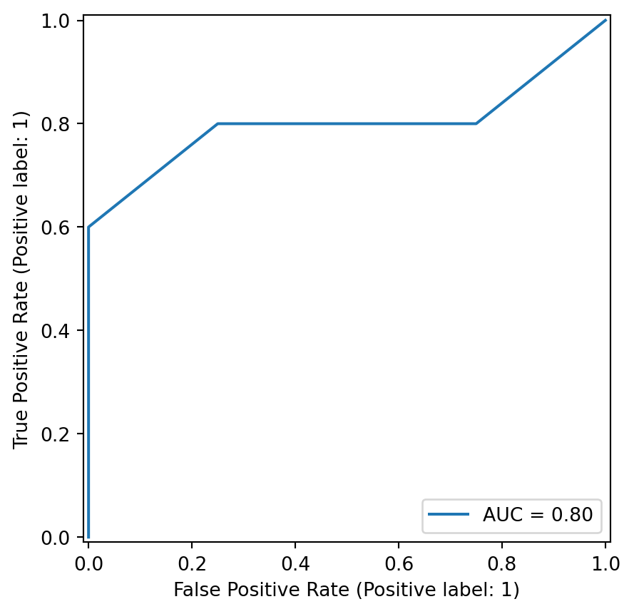

import pandas as pd
import numpy as np
from sklearn.neighbors import KNeighborsClassifier
from sklearn.naive_bayes import BernoulliNB, CategoricalNB
from sklearn.preprocessing import LabelBinarizer, OneHotEncoder
from sklearn.model_selection import train_test_split
from sklearn.metrics import (
accuracy_score, f1_score, precision_score,
recall_score, roc_auc_score, roc_curve, auc,
RocCurveDisplay, confusion_matrix
)5 Classification
5.1 Example 5.2
5.1.1 Load data
dat1 = pd.read_csv("data/ch7_dat1.csv")
dat1| ID | X1 | X2 | class | |
|---|---|---|---|---|
| 0 | 1 | 5 | 7 | 1 |
| 1 | 2 | 4 | 3 | 2 |
| 2 | 3 | 7 | 8 | 2 |
| 3 | 4 | 8 | 6 | 2 |
| 4 | 5 | 3 | 6 | 1 |
| 5 | 6 | 2 | 5 | 1 |
| 6 | 7 | 6 | 6 | 1 |
| 7 | 8 | 9 | 6 | 2 |
| 8 | 9 | 5 | 4 | 2 |
X = dat1[['X1', 'X2']]
y = LabelBinarizer().fit_transform(dat1['class'])5.1.2 Training and testing data
Let us use the first 7 observations as training data, while remaining 2 observations as testing data.
X_train, X_test, y_train, y_test = train_test_split(
X, y,
test_size=2, train_size=7,
random_state=None, shuffle=False
)5.1.3 k-nearest neighbors classifier
Use KNeighborsClassifier() from sklearn.neighbors module to define a kNN model for a classification problem.
Set n_neighbors=3 to train 3-NN in this example.
knn_model = KNeighborsClassifier(n_neighbors=3)Train the 3-NN classifier on training data.
knn_model.fit(X_train, y_train)/opt/hostedtoolcache/Python/3.11.9/x64/lib/python3.11/site-packages/sklearn/neighbors/_classification.py:238: DataConversionWarning: A column-vector y was passed when a 1d array was expected. Please change the shape of y to (n_samples,), for example using ravel().
return self._fit(X, y)KNeighborsClassifier(n_neighbors=3)In a Jupyter environment, please rerun this cell to show the HTML representation or trust the notebook.
On GitHub, the HTML representation is unable to render, please try loading this page with nbviewer.org.
KNeighborsClassifier(n_neighbors=3)
Use predict() method to make a prediction on training data.
pd.DataFrame(X_train).assign(
observed_class = y_train,
pred_class = knn_model.predict(X_train)
)| X1 | X2 | observed_class | pred_class | |
|---|---|---|---|---|
| 0 | 5 | 7 | 0 | 0 |
| 1 | 4 | 3 | 1 | 0 |
| 2 | 7 | 8 | 1 | 1 |
| 3 | 8 | 6 | 1 | 1 |
| 4 | 3 | 6 | 0 | 0 |
| 5 | 2 | 5 | 0 | 0 |
| 6 | 6 | 6 | 0 | 0 |
Also, maka a prediction on testing data.
pd.DataFrame(X_test).assign(
observed_class = y_test,
pred_class = knn_model.predict(X_test)
)| X1 | X2 | observed_class | pred_class | |
|---|---|---|---|---|
| 7 | 9 | 6 | 1 | 1 |
| 8 | 5 | 4 | 1 | 0 |
5.2 Examples 5.3 - 5.4
5.2.1 Load data
dat3 = pd.read_csv("data/ch5_dat3.csv")
dat3| ID | gender | age_gr | class | |
|---|---|---|---|---|
| 0 | 1 | M | 2 | 1 |
| 1 | 2 | M | 2 | 2 |
| 2 | 3 | M | 3 | 1 |
| 3 | 4 | M | 4 | 1 |
| 4 | 5 | F | 1 | 1 |
| 5 | 6 | F | 2 | 2 |
| 6 | 7 | F | 2 | 1 |
| 7 | 8 | F | 3 | 2 |
| 8 | 9 | F | 4 | 2 |
5.2.2 Preprocess data
Encode categorical values to integer variable by using factorize() method from pandas module.
X = dat3[['gender', 'age_gr']].copy()
X.gender, _ = pd.factorize(X.gender)
X.age_gr, _ = pd.factorize(X.age_gr)5.2.3 Ex 5.3: Naive Bayes classifier
5.2.3.1 Estimation
Use CategoricalNB() to define a naive Bayes classifier. Pass alpha=0 argument to do not apply smoothing.
nb_model = CategoricalNB(alpha=0)
nb_model.fit(X, dat3['class'])/opt/hostedtoolcache/Python/3.11.9/x64/lib/python3.11/site-packages/sklearn/naive_bayes.py:1504: RuntimeWarning: divide by zero encountered in log
np.log(smoothed_cat_count) - np.log(smoothed_class_count.reshape(-1, 1))CategoricalNB(alpha=0)In a Jupyter environment, please rerun this cell to show the HTML representation or trust the notebook.
On GitHub, the HTML representation is unable to render, please try loading this page with nbviewer.org.
CategoricalNB(alpha=0)
5.2.3.2 Posterior
Call predict_proba() method to predict posterior probability of belonging to each class.
nb_model.predict_proba(X)array([[0.70588235, 0.29411765],
[0.70588235, 0.29411765],
[0.70588235, 0.29411765],
[0.70588235, 0.29411765],
[1. , 0. ],
[0.34782609, 0.65217391],
[0.34782609, 0.65217391],
[0.34782609, 0.65217391],
[0.34782609, 0.65217391]])5.2.3.3 Classification
Call predict() method to make classification.
nb_model.predict(X)array([1, 1, 1, 1, 1, 2, 2, 2, 2])5.2.4 Ex 5.4: Evaluation metrics
y = dat3['class']
y_pred = nb_model.predict(X)5.2.4.1 Confusion matrix
confusion_matrix(y, y_pred)array([[4, 1],
[1, 3]])5.2.4.2 Accuracy
accuracy_score(y, y_pred)0.77777777777777785.2.4.3 Sensitivity (Recall)
Sensitivity is the same to precision. Use precision_score() in sklearn.metrics module. Set class 1 to be a positive event in this example by passing pos_label=1 argument.
precision_score(y, y_pred, pos_label=1)np.float64(0.8)5.2.4.4 Specificity
Specificity is the same to sensitivity with different event level, by passing pos_label=2 argument.
precision_score(y, y_pred, pos_label=2)np.float64(0.75)5.2.4.5 F1-score
F1 score is a harmonic mean of precision and recall.
You can either indirectly compute by using precision and recall
precision = precision_score(y, y_pred)
recall = recall_score(y, y_pred)
2 * precision * recall / (precision + recall)np.float64(0.8000000000000002)or directly compute by using f1_score function.
f1_score(y, y_pred)np.float64(0.8)5.2.4.6 ROC curve and AUC
Computing a ROC curve requires posterior probability.
prob = nb_model.predict_proba(X)[:, 0]Visualize ROC curve.
fpr, tpr, thresholds = roc_curve(y, y_score = prob, pos_label=1)
roc_auc = auc(fpr, tpr)
display = RocCurveDisplay(fpr=fpr, tpr=tpr, roc_auc=roc_auc, pos_label=1)
display.plot()